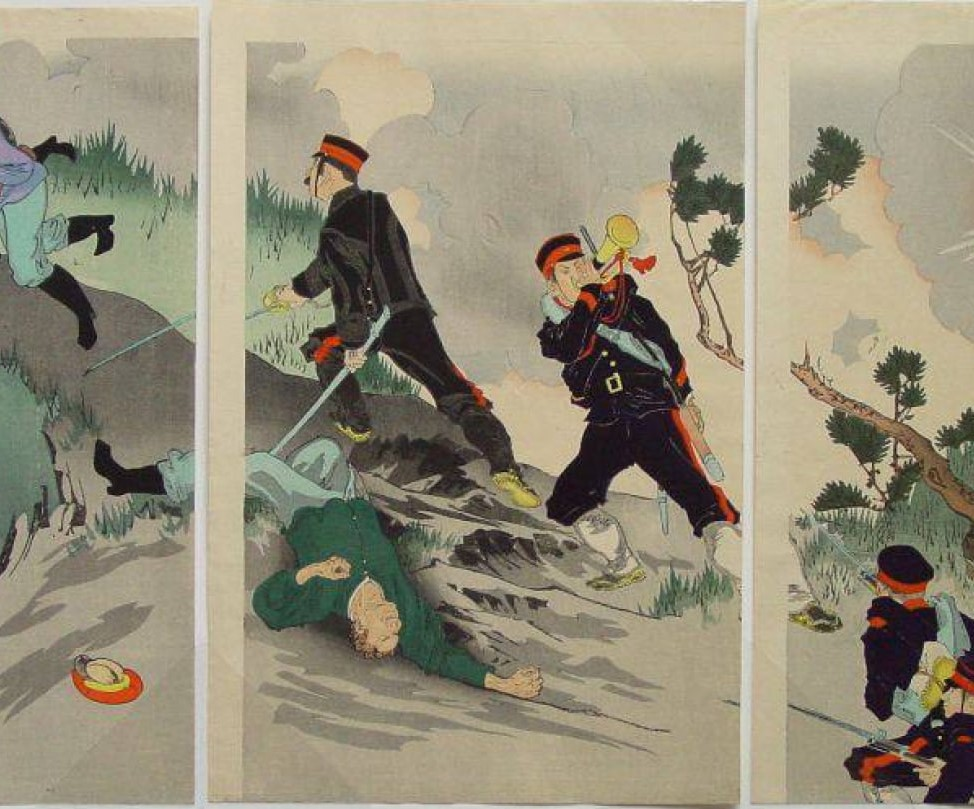
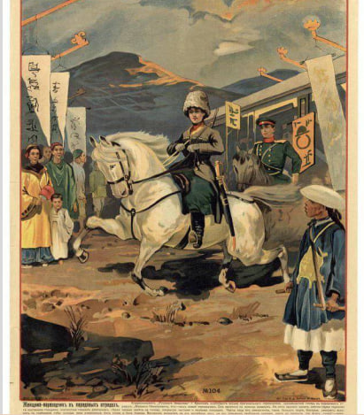
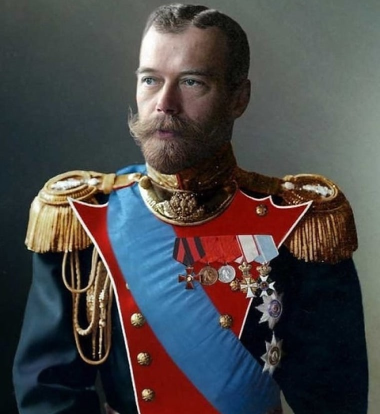
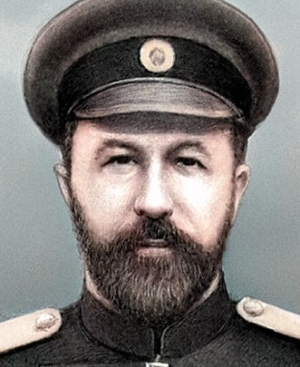
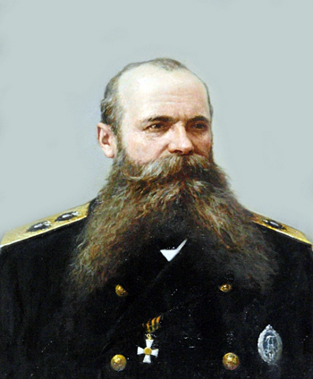
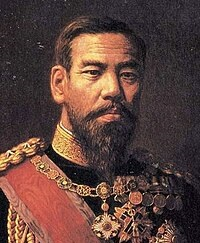
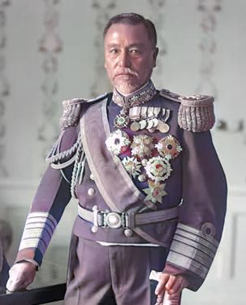

Русско-японская война: когда восток встретился с западом
В холодную зиму 1904 года мир был ошеломлен неожиданным событием, которое
навсегда изменило баланс сил на международной арене. Две могущественные империи
— Российская и Японская — столкнулись в жестокой и кровопролитной войне. Это была
первая крупная война XX века, где старые традиции военного дела встретились с
новейшими технологиями и тактиками. Но что привело к этой конфронтации? И почему
именно эта война стала переломным моментом в истории человечества?


Конфликт интересов: зачем России и Японии понадобился Восток?
Конфликт интересов: зачем России и Японии понадобился Восток?
К началу XX века Россия и Япония оказались втянуты в борьбу за влияние
в Азии. Для России Дальний Восток был стратегическим ключом к выходу
в Тихий океан и укреплению своей роли как великой державы.
Владивосток уже стал важным портом, но его замерзающие воды зимой
ставили под вопрос эффективность торговли и военных операций. Порт
Артур (ныне Люйшунь) с его незамерзающей бухтой казался идеальным
решением.
Япония, напротив, стремилась утвердить свое господство в регионе после
веков изоляции. Освоение Кореи и Маньчжурии было для нее вопросом
выживания и символом нового статуса мировой державы. Однако
российские планы по расширению своих территорий на востоке создали
напряженность, которая рано или поздно должна была перерасти в
открытый конфликт.
ЛИЧНОСТИ

Император Николай II
Роль: Император Российской империи в период войны
Вклад: Николай II лично утвердил решение о
начале военных действий, полагаясь на мощь
Российской империи. Однако его недооценка
Японии и нерешительность в управлении
войной привели к катастрофическим
последствиям.
Итог: Поражение в войне подорвало авторитет монархии и стало одной из причин революции 1905 года.
Генерал Алексей Николаевич Куропаткин
Роль: Главнокомандующий русскими сухопутными силами на Дальнем Востоке.
Вклад: Куропаткин был опытным военным
администратором, но его осторожная
тактика и недостаточная
решительность часто критиковались. Он
возглавлял русские войска в ключевых
сражениях, таких как битвы при Ляояне и
Мукдене, но не смог добиться успеха.
Итог: После войны был отправлен в отставку и стал символом военных неудач России.


Адмирал Степан Осипович Макаров
Роль: Командующий Тихоокеанским флотом в начале войны.
Вклад: Макаров был одним из самых талантливых
флотоводцев России. Он активизировал действия
русского флота после атаки на Порт-Артур
и пытался прорвать японскую блокаду.
Итог: Погиб 13 апреля 1904 года, когда его
флагманский корабль "Петропавловск"
подорвался на мине. Его смерть стала
огромной потерей для российской
стороны.
Император Мэйдзи
Роль: Император Японии, символ
модернизации страны и её стремления к величию.
Вклад: Под его руководством Япония провела
масштабные реформы, включая военную
модернизацию, что позволило ей успешно
противостоять России.
Итог: Победа в войне закрепила Японию как великую
державу и укрепила авторитет
императора.


Адмирал Того Хэйхатиро
Роль: Командующий японским объединённым флотом.
Вклад: Того считается одним из величайших
флотоводцев в истории. Он возглавил внезапную атаку
на Порт-Артур и одержал решающую победу
в Цусимском сражении, уничтожив российский флот.
Итог: После войны получил титул
"Морского Нельсона Японии" и стал национальным героем.